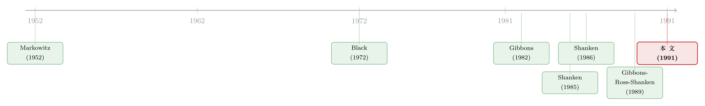

没有无风险资产的世界里，怎样给「市场组合有没有效」下判决
本文读的是 Zhou (1991, Journal of Financial Economics)：当经济里没有无风险资产时，检验一个给定组合（比如市场组合）是否均值-方差有效，是一道让人头疼的「非线性」难题。作者把似然比检验巧妙地写成一个特征根 \(\lambda_2\) 的单调函数，从而把多元统计里成熟的特征根分布搬了过来，给出了精确分布和一对最优的上、下界。用 1926–1986 的月度数据，他在多数五年期里拒绝了 CRSP 市值加权指数的有效性。
1 一个看似简单、却卡了二十年的问题
先抛一个问题：你手里有一个组合 \(p\)——比如全市场的市值加权指数——你想知道它是不是有效的。所谓有效，是说在给定方差下，它已经拿到了最高的期望收益；用资产定价的语言讲，市场组合有效，恰恰就是 CAPM（或零-beta CAPM）成立的另一种说法。
这个问题听上去再自然不过。自 Markowitz (1952) 把均值-方差的框架立起来，「某个组合到底有没有踩在有效前沿上」就成了整个领域的一根主线。可真要把它做成一个严谨的统计检验，麻烦才刚刚开始。
早期的做法是跑横截面回归，但那里藏着一个 误差变量 (errors-in-variables) 问题——你用「估计出来的 beta」当自变量，结果天然有偏。Gibbons (1982) 第一个把这件事搬进多元统计的框架（更早的雏形可以追溯到 MacBeth 1975 的博士论文），提出了 似然比检验 (likelihood ratio test, LRT)，靠的是渐近的卡方分布。
渐近分布在这里靠不住。Stambaugh (1982) 的模拟显示，渐近 \(\chi^2\) 拒绝得太频繁，而且资产数越多越不可靠。Shanken (1985) 给了一个触目惊心的例子：40 个资产、60 期，渐近 P 值是 0.01，真实 P 值却高达 0.92。同一份数据，一个说「果断拒绝」，一个说「证据稀薄」——你信哪个？
所以，知道精确（小样本）分布，在这里不是锦上添花，而是生死攸关。
2 有无风险资产，是两道完全不同的题
接着，一个自然的问题是：精确检验到底难在哪？
答案要看有没有无风险资产。
如果有无风险资产，事情其实是漂亮的。这时候市场模型里的收益可以读成超额收益，组合有效就等价于一组线性约束「\(\alpha_i = 0\)」。Gibbons, Ross, and Shanken (1989)——也就是大名鼎鼎的 GRS——证明了这种情形下的检验统计量服从一个干净的 \(F\) 分布，没有任何讨厌的多余参数。
但没有无风险资产时，一切都变了。因为此刻 零-beta 利率 (zero-beta rate) \(\gamma_0\) 是未知的、要从数据里估，而且它进入约束的方式是和 \(\beta_i\) 相乘。于是有效性的约束变成：
$$ H_0:\quad \alpha_i = \gamma_0\,(1-\beta_i),\qquad i=1,\dots,N. $$
注意这个 \(\gamma_0(1-\beta_i)\) ——两个未知量乘在一起，整个假设是非线性的。线性约束有一整套现成工具，非线性约束却几乎无章可循。Gibbons (1982) 给过一个 Gauss-Newton 数值过程来估 \(\gamma_0\)，但计算量大；好在 Kandel (1984, 1986) 找到了显式解并给了几何解释，Shanken (1986) 又把它推广到市场模型参数化。估计的问题被优雅地解决了，可检验的问题还悬在那里。
于是 Shanken 退而求其次：Shanken (1985) 给了 P 值的一个小样本下界（外加一个基于 Hotelling \(T^2\) 的近似），Shanken (1986) 又给了一个上界。有了上界，你哪怕不靠渐近结果，也能在它足够小的时候直接拒绝有效性。
这就是这篇论文出场时的局面：估计已经解决，精确检验只有零碎的边界。Zhou 要做的，是把这道非线性的题，整体地解掉。
3 关键的一步：把似然比「翻译」成一个特征根
然后，真正关键的一步出现了。
作者的做法，本质上是换一种语言。我们先把市场模型写成矩阵形式：
$$ R = X\Theta + E, $$
其中 \(R\) 是 \(T\times N\) 的收益矩阵，\(X\) 是 \(T\times 2\)（第一列全 1，第二列是组合 \(p\) 的收益），\(\Theta\) 是 \(2\times N\) 的系数矩阵（第一行 \(\alpha\)，第二行 \(\beta\)）。在正态、跨期独立的假设下，对数似然是
$$ \log L(\Theta,\Sigma) = -\frac{TN}{2}\log(2\pi) - \frac{T}{2}\log|\Sigma| - \frac{1}{2}\,\mathrm{tr}\,\Sigma^{-1}\Omega,\qquad \Omega = (R-X\Theta)'(R-X\Theta). $$
把 \(\Sigma\) 用它的条件估计替换掉，似然就「浓缩」成只剩一个行列式要最小化：
$$ \log L(\Theta) = -\frac{T}{2}\log|\Omega| + C. $$
无约束时，最小化 \(|\Omega|\) 给出我们熟悉的 OLS 估计（逐个资产对市场回归）。但有约束时，作者通过一番代数变换，把「最小化行列式」这件事，归结成一个广义特征根问题：设 \(\lambda_1 \ge \lambda_2\) 是
$$ \bigl|\,X'Y(Y'Y)^{-1}Y'X - \lambda\, X'X\,\bigr| = 0 $$
的两个根（这里 \(Y\) 是把组合收益从各资产收益里「扣掉」后的残差矩阵）。于是两个行列式分别是：
$$ |\hat\Omega_c| = |Y'Y|\,(1-\lambda_1),\qquad |\hat\Omega_u| = |Y'Y|\,(1-\lambda_1)(1-\lambda_2). $$
约束估计只「吃掉」最大的那个根 \(\lambda_1\)，无约束估计把两个根都吃掉。两者一比，奇迹发生了——多出来的那一份恰好是 \(\lambda_2\)：
$$ \mathrm{LR} = \left(\frac{|\hat\Omega_u|}{|\hat\Omega_c|}\right)^{T/2} = (1-\lambda_2)^{T/2}. $$
这就是整篇论文的枢纽。似然比，被压缩成了唯一一个数 \(\lambda_2\) 的单调函数。\(\lambda_2\) 越大，\(\mathrm{LR}\) 越小，越该拒绝。而 \(\lambda_2\) 的取值被锁在 \(0\) 和 \(1\) 之间。检验从此可以只盯着这一个特征根——而特征根的分布，正是多元统计学一百年来反复研究的对象。
这正是「换语言」的威力。原本是一个棘手的、非线性的、带未知 \(\gamma_0\) 的假设检验；翻译成特征根之后，James (1964)、Pillai (1956)、Nanda (1947) 等人关于「行列式方程之根」的经典分布结果，一下子全都能用上了。（关于「换一把尺子就能让老问题焕然一新」的同类思路，可参见《正态分布早被否决，可我们的 CAPM 检验还在用它的尺子量天下》。）
4 \(\lambda_2\) 到底量的是什么？——夏普比的差距
但 \(\lambda_2\) 只是一个统计量吗？它有没有经济含义？
有，而且很直白。借用 GRS (1989) 的结果，在有无风险资产可作参照时，
这里 \(S(\cdot)\) 是 夏普测度 (Sharpe measure)。\(S(p^*)\) 是事后有效前沿能给的最高单位风险收益，\(S(p)\) 是你手里那个组合的。两者之差，量的就是 \(p\) 离有效前沿有多远。而 \(\lambda_2\) 和 \(Q\) 之间是一个简单的递增关系：
$$ \lambda_2 = \frac{Q}{1+Q}. $$
直觉于是清清楚楚：如果市场组合的夏普比已经很贴近事后有效组合，\(Q\) 和 \(\lambda_2\) 都接近零，你几乎没有证据反对有效性；反过来，如果有效组合的单位风险收益明显甩开了市场组合，\(\lambda_2\) 就被顶上去，拒绝便顺理成章。检验「市场有没有效」，最终落到了「市场组合的夏普比，落后事后冠军多少」这一个量级上。 在没有无风险资产的零-beta 情形里，只要把 \(\gamma_0\) 的极大似然估计解释成借贷利率，这层关系依然成立。
5 麻烦的尾巴：一个躲不掉的「多余参数」
到这里似乎可以收工了，于是反转出现：\(\lambda_2\) 的精确分布，即便在原假设下，也依赖一个未知参数。
这是它和 GRS 最大的不同。GRS 的 \(F\) 分布在原假设下干干净净；而这里，\(\lambda_2\) 的精确密度依赖一个 多余参数 (nuisance parameter) \(\omega_1\)。具体说，设 \(\omega_1 \ge \omega_2 \ge 0\) 是某个行列式方程的两个根；原假设成立当且仅当 \(\omega_2 = 0\)，但 \(\omega_1\) 的值你并不知道。
怎么办？作者给了三件武器：
其一，精确 P 值是可算的。 你可以用 \(\omega_1\) 的极大似然估计代入，再用论文附录 B 的数值方法把 P 值算出来。数值结果显示，\(\omega_1\) 的小幅扰动并不怎么改变 P 值——这让「代入估计值」这件事变得相当稳健。
其二，单调性（Theorem 1）。 在 \(N\ge 2\)、\(T\ge N+2\) 时，\(\mathrm{Prob}(\lambda_2 < x\mid\omega_1)\) 是 \(\omega_1\) 的减函数。这意味着：如果你用一个偏高的 \(\omega_1\) 去算，会低估真实概率，从而得到一个下界；用偏低的 \(\omega_1\)，则得到上界。
其三，一对最优界（Theorem 2 与 Theorem 3）。 顺着单调性走到两个极端： - \(\omega_1 \to \infty\) 给出 P 值的最优下界，形式上是一个 \(F\) 分布； - \(\omega_1 = 0\) 给出最优上界，由 Nanda (1947) / Pillai (1956) 的结果写成闭式。
这两个界既最优、又完全不含未知参数，计算还都很轻。它们的用法是非对称的：上界若很小，就能直接拒绝有效性——比如算出上界是 5%，那真实显著性水平必然 \(\le 5\%\)，于是你可以在通常的 5% 水平上断言「拒绝」；下界若很大，则可以接受有效性。作者特别指出，他这个上界比 Shanken (1986) 的更紧，在「假设濒临被拒绝」的临界地带尤其好用。
6 数据说话：CRSP 指数，多数时候不有效
最后是实证。作者用 1926–1986 的月度数据，把每个连续的五年期切成一段，在一个含 十二个行业组合 的市场模型里，检验 CRSP 市值加权指数的有效性。结论相当干脆：
- 在 10% 显著性水平上，十二个五年期里，除两个之外全部拒绝有效性；
- 在 5% 水平上，十二个里有八个拒绝。
那这会不会只是 一月效应 (January effect) 在捣乱？作者把一月的收益删掉重做了一遍检验——以此回应这个再自然不过的质疑。整体而言，市值加权指数作为「有效组合」的身份，在大多数子样本里都站不住脚。这与 Roll (1977) 那条著名批评遥相呼应：我们检验的，从来不是抽象的「市场」，而是某个具体的代理指数。
7 文献脉络
把这条线从头捋一遍，会看到一个清晰的接力。
起点是 Markowitz (1952) 的均值-方差框架，和随后 Sharpe (1964)、Lintner (1965)、Black (1972) 把它推到均衡、长成 CAPM 与零-beta CAPM。检验的方法论则由 Gibbons (1982) 用多元 LRT 开张，紧接着 Stambaugh (1982) 用模拟敲响了「渐近不可靠」的警钟，Shanken (1985) 用一个 0.01 对 0.92 的例子把警钟敲成了警报。
随后兵分两路。估计这一支：Kandel (1984, 1986) 解出零-beta 利率的显式 ML 估计，Shanken (1986) 推广到市场模型。检验这一支：有无风险资产时，GRS (1989) 给出干净的 \(F\) 检验；无风险资产时，Shanken (1985, 1986) 给出零散的上、下界。
本文 Zhou (1991) 站在的，正是「无风险资产 + 精确检验」这个还空着的格子里：用特征根把 LRT 重写，补上精确分布，并把上、下界做到最优。它和同年前后那批「把精确小样本性质补全」的工作——比如对 GMM 小样本表现的反思（参见《「拒绝」太多，还是「相信」太少：GMM 在小样本里的两副面孔》）——共享着同一种关切：别让渐近近似替你下错判决。

8 评论与延伸（Q&A + 研究方向）
（a）几个可能的疑问
Q：这和 GRS (1989) 到底差在哪？为什么不能直接用那个 \(F\) 检验？
GRS 处理的是有无风险资产的情形，此时有效性是线性约束「\(\alpha_i=0\)」，统计量在原假设下服从干净的 \(F\) 分布，不含未知参数。本文处理没有无风险资产：零-beta 利率 \(\gamma_0\) 未知且与 \(\beta_i\) 相乘，约束 \(\alpha_i=\gamma_0(1-\beta_i)\) 是非线性的，精确分布因此多了一个多余参数 \(\omega_1\)。两者不是替代，而是互补——一个填上了另一个留下的空格。
Q：既然精确分布依赖未知的 \(\omega_1\)，那这个「精确检验」还算数吗？
算数，靠的是两手。一手是用 \(\omega_1\) 的 ML 估计代入数值计算 P 值，而且作者验证了 P 值对 \(\omega_1\) 的扰动不敏感；另一手是那对与 \(\omega_1\) 无关的最优上下界。上界小就拒绝、下界大就接受，很多时候根本不需要知道 \(\omega_1\) 的真值。
Q：特征根 \(\lambda_2\) 凭什么能代表「偏离原假设的程度」？
两个角度。统计上，\(\lambda_2\) 越大，似然比 \(\mathrm{LR}=(1-\lambda_2)^{T/2}\) 越小，原假设下的最大似然相对越低；拟合上，\(\lambda_2\) 越小，约束与无约束模型的「广义方差」之比越接近，说明加上有效性约束几乎不损失拟合。经济上，\(\lambda_2 = Q/(1+Q)\) 直接绑定了市场组合与事后有效组合的夏普比差距。
Q：上界比 Shanken (1986) 更紧，这件事重要吗？
在临界地带很重要。当一个组合的有效性「差一点点就被拒绝」时，更紧的上界可能正好把 P 值压到 5% 以下，让你能下「拒绝」的判决；松一点的界则只能两手一摊。换句话说，紧致度在最需要做决定的地方兑现价值。
Q：拒绝了 CRSP 指数的有效性，是不是就等于否定了 CAPM？
严格说，是否定了「以该指数为市场代理的零-beta CAPM」。这正是 Roll (1977) 批评的要害：真正的市场组合不可观测，我们检验的永远是某个代理。删掉一月收益、换行业分组都是为了排除特定干扰，但「代理 vs 真市场」这层根本性的含糊，方法本身解决不了。
Q：正态、跨期独立的假设，会不会让结论很脆弱？
这是整套多元统计框架的命门。收益的厚尾、条件异方差、时变 beta 都被假设掉了。论文的精确性是「在正态假设之内」的精确；一旦分布偏离正态，名义上的精确 P 值同样会有偏。这也是后续文献（如改用更稳健的收益分布、或转向 GMM）要补的方向。
（b）几个可能的研究问题与提案
-
把特征根检验搬到公司债组合的有效性上。 【经济故事】信用市场近年涌现出大量「因子」与「有效前沿」叙事，但公司债收益厚尾严重、流动性噪声大，渐近检验很可能像 1985 年的 CAPM 一样误判。用 \(\lambda_2\) 型精确/有界检验去问「某个信用因子组合是否有效」，比直接套 \(F\) 检验更稳妥。 【可行性】中。数据用 TRACE + 债券因子收益即可；难点在于债券的非正态远比股票严重，需要把特征根框架与稳健/自助法结合，纯正态版本说服力有限。
-
外资重仓组合 vs 本地有效前沿。 【经济故事】外资持有人常被指「追涨」或「扎堆」，一个可检验的问法是：外资的市值加权持仓组合，是否落在本地市场的有效前沿上？落后多少（即 \(Q\)）可以量化外资配置的「无效率溢价」。 【可行性】中。需要逐国的外资持仓快照（如 FactSet/EPFR）配合本地资产收益；识别上要小心持仓是内生选择的结果，\(\lambda_2\) 度量的是事后差距而非因果。
-
用上下界做「滚动判决」，画出有效性的时间地图。 【经济故事】本文按五年期切片，本质上已是一种时变检验。把最优上下界做成逐月滚动窗口，可以画出「市场组合在哪些时段明显无效」的时间序列，再去和宏观状态、流动性危机对照。 【可行性】高。计算成本低（界是闭式或轻量数值），现成股票/行业数据即可复现；主要工作量在窗口选择与多重检验校正。
-
把多余参数 \(\omega_1\) 的敏感性做成正式的稳健性诊断。 【经济故事】作者说 P 值对 \(\omega_1\) 不敏感，但这只是数值观察。能否给出「P 值对 \(\omega_1\) 的弹性」的解析刻画，从而事先判断哪些样本里「代入估计值」是安全的、哪些必须依赖上下界？ 【可行性】中偏高。属于纯方法论推导，基于论文 Theorem 1 的单调性即可展开，doable，但发表价值取决于能否给出干净的可用边界。
9 我的判断
这篇论文的贡献，是方法论上的一次干净收口。它没有发明新的经济学，而是把一个被「非线性 + 未知零-beta 利率」拖了近十年的检验难题，用一个特征根重新表述，从而把多元统计的整座军火库接了进来——精确分布、最优上界、最优下界，一次给齐。在「先估计、后检验」这条接力线上，它补上了最后、也最硬的一棒。和 GRS (1989) 并置来看，二者恰好拼成了「有/无无风险资产」的完整版图。
要说担忧，集中在两点。其一是正态假设：整套精确性都活在正态、跨期独立的框架里，而月度、尤其是行业组合收益的厚尾和条件异方差是出了名的，名义精确未必等于实际精确。其二是 Roll 批评绕不过去：拒绝的是「CRSP 指数」的有效性，而非那个不可观测的真市场——删一月、换分组都缓解不了这个根本含糊。
后续我最想看到的，是把这套特征根思路接到非正态、乃至条件分布上去：当收益服从更现实的厚尾分布时，\(\lambda_2\) 的（有界）分布还能不能保持可算？如果能，那这把 1991 年磨出来的尺子，就不只是 CAPM 检验的历史注脚，而能直接量一量今天因子动物园里那些层出不穷的「有效前沿」。
参考文献
- Black, Fischer (1972). Capital market equilibrium with restricted borrowing. Journal of Business 45(3), 444–454.
- Gibbons, Michael R. (1982). Multivariate tests of financial models: A new approach. Journal of Financial Economics 10(1), 3–27.
- Gibbons, Michael R., Stephen A. Ross, and Jay Shanken (1989). A test of the efficiency of a given portfolio. Econometrica 57(5), 1121–1152.
- James, Alan T. (1964). Distributions of matrix variates and latent roots derived from normal samples. Annals of Mathematical Statistics 35(2), 475–501.
- Kandel, Shmuel (1984). The likelihood ratio test statistic of mean-variance efficiency without a riskless asset. Journal of Financial Economics 13(4), 575–592.
- Kandel, Shmuel (1986). The geometry of the likelihood estimator of the zero-beta return. Journal of Finance 41(2), 339–346.
- Lintner, John (1965). The valuation of risk assets and the selection of risky investments in stock portfolios and capital budgets. Review of Economics and Statistics 47(1), 13–37.
- Markowitz, Harry M. (1952). Portfolio selection. Journal of Finance 7(1), 77–91.
- Nanda, D. N. (1947). Distribution of a root of a determinantal equation. Annals of Mathematical Statistics 18(1), 47–57.
- Pillai, K. C. S. (1956). On the distribution of the largest or the smallest root of a matrix in multivariate analysis. Biometrika 43(1), 122–127.
- Roll, Richard (1977). A critique of the asset pricing theory's tests, Part I: On past and potential testability of the theory. Journal of Financial Economics 4(2), 129–176.
- Shanken, Jay (1985). Multivariate tests of the zero-beta CAPM. Journal of Financial Economics 14(3), 327–348.
- Shanken, Jay (1986). Testing portfolio efficiency when the zero-beta rate is unknown: A note. Journal of Finance 41(1), 269–276.
- Sharpe, William F. (1964). Capital asset prices: A theory of market equilibrium under conditions of risk. Journal of Finance 19(3), 425–442.
- Stambaugh, Robert F. (1982). On the exclusion of assets from tests of the two-parameter model: A sensitivity analysis. Journal of Financial Economics 10(3), 237–268.
- Zhou, Guofu (1991). Small sample tests of portfolio efficiency. Journal of Financial Economics 30(1), 165–191.